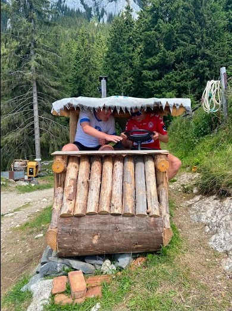
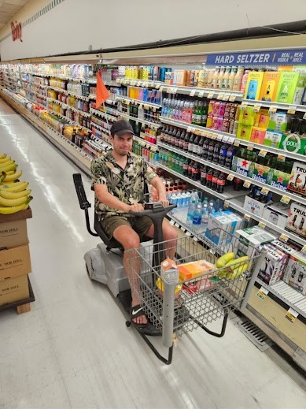

Het najaar is begonnen, de zomer is officieel voorbij en het herfstweer komt eraan. De Saloncoureurs genoten nog van de laatste zomerweken en waren elk weekend op post voor een nieuwe zondagsrit. Buiten die zondagsritten bleken de Saloncoureurs echter minder gemotiveerd; ook de vakantie van kilometervreter Nico deed hier geen goed aan. Het kilometerdoel van 40.000 km vóór 1 december lijkt zo stilaan een onmogelijke opdracht te worden.
Toch liggen er nog enkele doelstellingen open om het seizoen niet helemaal beschamend af te sluiten. Ook de race tegen de klok wordt spannend voor Thibault (649 km), die nog enkele ritjes moet afwerken voor het einde van het seizoen.
Een oefening om u bezig te houden nu de zon sneller gaat zakken in de zee. Zoek de 7 verschillen — de oplossing mag verstuurd worden in de groepschat.

